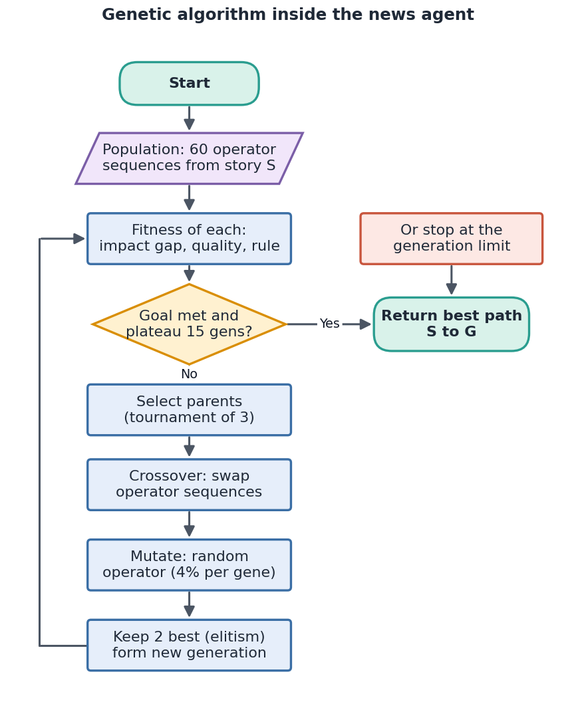
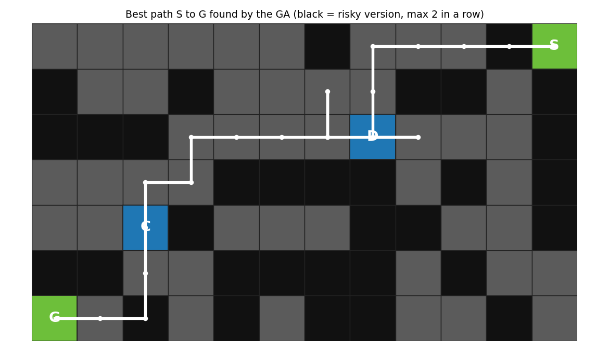
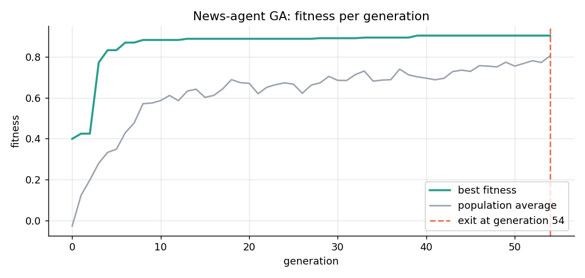
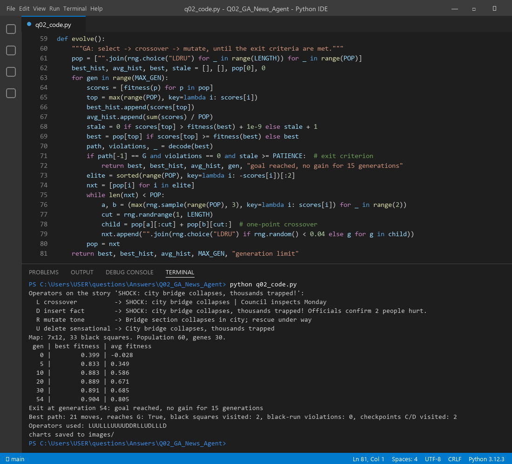

Think of Diagram 2 as a map of every version of one news story. S is the story as first written. G is the version that gives the impact we want on readers. Each square is a version, and a move to the next square is one edit: swap the headline, add a fact, change the tone, cut a sensational line. The GA does not walk one path. It grows a whole population of edit sequences, keeps the ones that get closest to G, mixes them and mutates them. After some generations, one sequence reaches G safely.
| Part | News agent |
|---|---|
| Agent type | Goal-based: it knows the goal G and plans edits to reach it. The GA is its planning step. |
| Performance measure | Gap to target impact, accuracy and quality of the story, rule obeyed, few edits |
| Environment | The story versions, readers, editors, fact sources |
| Sensors | News feeds, reader clicks and shares, fact-check results |
| Actuators | The four edit operators, then publish or send to an editor |
| Agent function | Run the GA on the percept (current story S), then publish the best sequence's final version |
Each news item is a chromosome with seven genes: headline, lead, facts, sources, tone, length and image.
| Item | Headline | Facts | Sources | Tone | Length | Risk |
|---|---|---|---|---|---|---|
| N1 Bridge | "SHOCK: city bridge collapses!" | 2 | 1 | alarming | short | black |
| N2 Health | "New flu strain: what we know" | 5 | 3 | calm | medium | grey |
| N3 Tech | "Phone maker unveils foldable" | 4 | 2 | neutral | medium | grey |
| N4 Sports | "UNBELIEVABLE final-over win" | 3 | 1 | excited | short | black |
In the run, the GA's own population is 60 operator sequences (30 edits each) applied to the story, which is what moves a version across the map.
| Move | Operator | What it does to the story |
|---|---|---|
| L | Crossover | Take the headline of one news item and the body of another |
| D | Fact insertion (mutation) | Add a verified fact, quote or source |
| R | Tone mutation | Rewrite the tone, e.g. alarming → calm |
| U | Deletion / inversion | Remove a sensational line, or reorder into an inverted pyramid |
Real example from the run, on "SHOCK: city bridge collapses, thousands trapped!": the delete operator gives "City bridge collapses, thousands trapped", and the tone mutation gives "Bridge section collapses in city; rescue under way".
F = 0.45·closeness + 0.30·reached + 0.15·avg quality + 0.05·checkpoints − 0.12·violations − 0.002·length

function NewsAgent(S, G): # goal-based agent function
population ← 60 random operator sequences (length 30)
for generation = 0 .. MAX_GEN:
for each seq in population:
path ← apply operators from S, skip moves that leave the map
fitness(seq) ← closeness + reached + quality + checkpoints
− penalty(black squares in a row > 2) − length cost
best ← sequence with the highest fitness
if best reaches G and has no violations and no gain for 15 generations: return best
new ← the 2 best sequences
while new is not full:
p1, p2 ← tournament_selection(population)
child ← one_point_crossover(p1, p2)
mutate each gene with probability 0.04
new.add(child)
population ← new
return best
A GA never knows it is "done", so we need clear stopping rules. The agent stops when any of these is true:
| Rule | Why |
|---|---|
| Goal met: best path ends on G with zero rule violations | The story reaches the target impact safely. This is the main rule. |
| Plateau: no improvement for 15 generations | More search is wasting time. Combined with the goal rule, it also lets the path get shorter first. |
| Generation limit (150) or time budget | The news deadline is fixed. The agent must publish something. |
| Editor approval (manual inspection) | A human can accept a good enough version at any time. |
The black-square rule is not an exit rule. It is a feasibility check: a path with violations can never be the final answer.
| Generation | Best fitness | Average fitness |
|---|---|---|
| 0 | 0.399 | −0.028 |
| 5 | 0.833 | 0.349 |
| 10 | 0.883 | 0.586 |
| 30 | 0.891 | 0.685 |
| 54 (exit) | 0.904 | 0.805 |
The GA stopped at generation 54 (goal reached, no gain for 15 generations). The best path has 21 moves, ends on G, visits only 2 black squares (never in a row), has 0 violations and passes both checkpoints C and D. The shortest possible walk is 17 moves, so the GA path is close to it.



Files in this folder: q02_code.py (source), q02_code.ipynb (Colab/Jupyter version, already run),
q02_output.txt (console output), images/ (all figures).